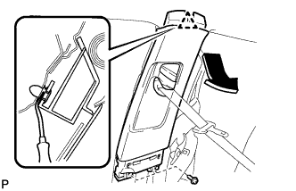

Front Shoulder Belt Anchor Adjuster Assembly Removal |
| 1. Disconnect Battery Negative Terminal |
| 2. Remove Front Door Scuff Plate RH |
 |
Disengage the 10 claws and remove the front door scuff plate RH.
| 3. Disconnect Front Door Opening Trim Weatherstrip RH |
 |
Remove the front door opening weatherstrip RH.
| 4. Remove Rear Door Scuff Plate RH |
 |
Disengage the 8 claws and remove the rear door scuff plate RH.
| 5. Disconnect Rear Door Opening Trim Weatherstrip RH |
 |
Remove the rear door opening trim weatherstrip RH.
| 6. Remove Lap Belt Outer Anchor Cover (Installation Position RH Side) |
 |
Disengage the 3 claws and remove the lap belt outer anchor cover.
| 7. Disconnect Front Seat Outer Belt Assembly Floor Anchor |
 |
Remove the bolt and disconnect the floor anchor portion of the front seat outer belt assembly RH.
| 8. Remove Center Pillar Garnish LWR RH |
 |
Spread the upper part of the garnish left and right and disengage the 2 claws A.
Pull toward the vehicle inside, disengage the 2 claws B and 2 clips, and remove the center pillar garnish LWR RH.
| 9. Remove Center Pillar Garnish RH |
 |
Remove the 2 screws.
Using a clip remover, disengage the clip.
Pass the floor anchor portion of the front seat outer belt assembly RH through the center pillar garnish RH and remove the center pillar garnish RH.
| 10. Disconnect Front Seat Outer Belt Assembly Shoulder Anchor |
 |
Remove the nut and disconnect the shoulder anchor of the front seat outer belt assembly RH.
| 11. Remove Front Shoulder Belt Anchor Adjuster Assembly |
 |
Remove the 2 bolts and remove the front shoulder belt anchor adjuster assembly.